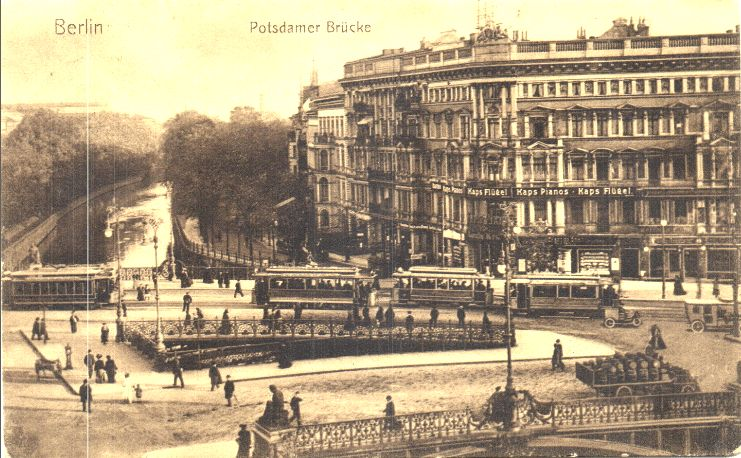
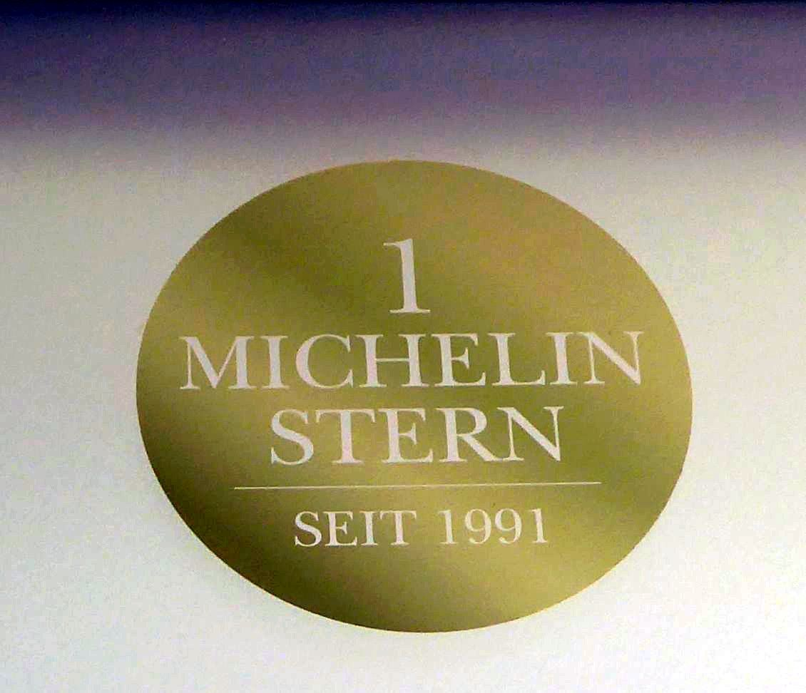
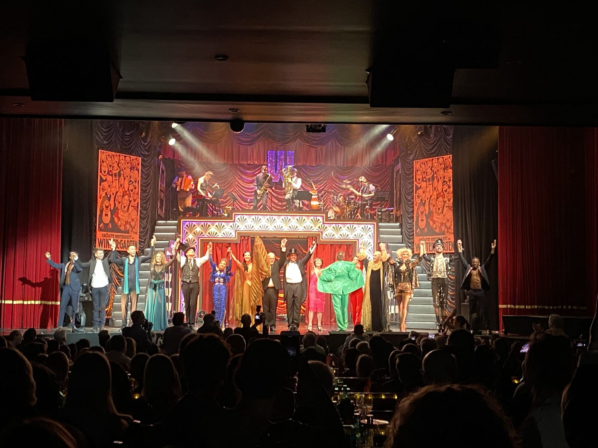

Spaziergang
Kanal bis zum Varieté
Vormittags, eine Stunde ohne Umweg. Park, dann die Straße, dann essen.
Essen. Irma la Douce, Potsdamer Straße 102. Neben dem Varieté. Im Michelin-Beitrag von 2023 hat das Haus einen Stern. Öffnungszeiten
Stopps
- Landwehrkanal

Zeitzeugen gesucht: Der Landwehrkanal wird 175 Jahre alt. - Potsdamer Brücke

An der Potsdamer Brücke - Irma la Douce Öffnungszeiten

Der Guide Michelin 2023 hat gesprochen. - Wintergarten Varieté

Der Wintergarten feiert seinen 30. Geburtstag
Gelesen
2025 jährt sich die Eröffnung des Landwehrkanals zum 175. Mal. Der kurze Beitrag vom 17. März sucht Zeitzeugen. Dirk Zeiske plant eine Veröffentlichung und bittet um Anekdoten und persönliche Erlebnisse, außerdem um Menschen, die noch im „Studentenbad“ am Kanal gebadet haben. Das Alte Studentenbad lag in Kreuzberg, Ratiborstraße 14, am Kanalknie gegenüber der Einmündung des Neuköllner Kanals, und wurde 1954 geschlossen. Der Text nennt eine Adresse, an die man sich melden kann. Hier steht sie nicht noch einmal.
Am Ufer, in den längeren Stücken, liegt die Potsdamer Brücke, und Paul Enck schreibt am 3. September 2022 ihre Synagoge als die erste südlich des Landwehrkanals in der Schöneberger Vorstadt, die bei der Eröffnung schon mehr als zehn Jahre zu Berlin gehörte. 1840 ist das Areal noch unbebaut, einzelne Häuser an der Potsdamer Chaussee, die Maulbeerplantage des Seidenfabrikanten Pollack nicht mehr in Betrieb. Die Baugeschichte der Ecke Potsdamer Straße 24 / Schöneberger Ufer 26 beginnt 1863. Besitzer des Café Boulevard ist der Konditor J. A. Rosenthal. Ein Streit unmittelbar vor Weihnachten 1866, gemeldet in der Staatsbürger-Zeitung, beendet offenbar seine Karriere dort. Der Bankier L. W. Niedlich übernimmt das Haus und stellt der Königlichen Landwirtschaftlichen Hochschule Ausstellungsräume. Im April 1868 eröffnet ein provisorisches Museum, im Juni auch im zweiten Stock. Der König, der spätere Kaiser Wilhelm I., kommt zur Eröffnung. Niedlich stirbt 1872. Die Erben verkaufen an den Tiergarten-Synagogen-Verein. Auf der Fläche des Ausstellungsraums entsteht die Synagoge, das Wohnhaus links davon wird neu gebaut. Eröffnung 1875/76.
Um 1896 beschließt der Magistrat, die Brücke erneut auszubauen, nach 1848 und 1861, diesmal als Doppelbrücke. Viktoria-Luise-Straße und alte Potsdamer Straße treffen sich auf der Brücke. In der Mitte das Dreieck, das der Berliner Volksmund „Spucknapf“ nennt. Straße und Bürgersteige werden höher gelegt. Am Loeser-&-Wolff-Haus, das Enck am 28. Juli 2022 fotografiert, liegen die Eingänge noch heute fast einen Meter tiefer. 1897 waren es zwischen 22 und 85 Zentimetern. Die Baupolizei verlangt massive Treppen, eiserne Gitter, Entwässerung an die Kanalisation, auf Kosten der Eigentümer. Der Verein wehrt sich. Die Stadt hat ohne die Anlieger erhöht und einen Streifen Vorgarten eingezogen, bis zu vier Meter Breite auf etwa zwanzig Metern an der Potsdamer Straße und einen halben Meter auf vierzig Metern am Schöneberger Ufer, zusammen mehr als hundert Quadratmeter. Die Kanzlei Dr. Samter, Mohrenstraße 65, fordert 89.928,20 Reichsmark. Im Vergleich zahlt die Stadt 50.000 Reichsmark und übernimmt die Sicherungen, die zuvor auf etwa 10.000 geschätzt waren. Enck rechnet die 50.000 auf etwa 350.000 Euro Kaufkraft um.
Warum „Tempel der Millionäre“? Enck prüft die Akten und das, was vermutlich mit dem letzten Kassenwart nach Jerusalem ins Israelische Staatsarchiv gekommen ist: die Satzung von 1905, eine undatierte Mitgliederliste. Das Kassenbuch der Jahre 1926/27 stand ihm nicht zur Verfügung. Allein die Digitalisierung hätte 200 Euro gekostet. Die ersten Vorsitzenden, im Adressbuch, sind ein Rentier Oppenheim, ein Kommerzienrat Lachmann, ein Bankier Bamberger, ein Kaufmann Unger. Das klinge noch nicht nach Millionären. 1896 entsteht in der Lützowstraße 16 eine neue, große Synagoge der liberalen Gemeinde, bis zu 2000 Personen. Die an der Brücke bleibt, weil ihr Ritus ein anderer ist: konservativ, ohne Orgel, mit getrennten Sitzen, hebräisch statt deutsch. Die Liste, vermutlich um 1910, hat 135 Namen. Hinter jedem kann eine Familie stehen, Enck rechnet mit 400 bis 500 Personen. Weniger als die Hälfte wohnt im Lützow-Viertel. Das Einzugsgebiet reicht ins Scheunenviertel, in die Friedrichstadt, ins Hansaviertel, nach Schöneberg, Charlottenburg, Wilmersdorf, bis Dahlem. Von 104 Berufen, die er ermitteln kann: etwa gleich viele Bankiers und Kaufleute, dazu Rentiers, Fabrikanten, Juristen, Mediziner, Direktoren, Verleger, Akademiker, ein Ingenieur, ein Künstler, ein Juwelier. Der Beiname mag auf einige zugetroffen haben, schreibt er, sicher nicht auf alle. 1928 verkauft der Verein das Grundstück an Lucie Sommergut, geschiedene Regierungsrätin, geborene Loeser, für 1,2 Millionen Reichsmark. Dort entsteht die Zigarrenfabrik Loeser & Wolff. Das Haus steht noch und ist denkmalgeschützt. Aus dem Millionärstempel, schließt Enck, sei wenigstens ein Millionentempel geworden.
Ralf Hausding, Gastbeitrag vom 19. Juni 2026, erinnert sich an dieselbe Brücke aus der Nachkriegskindheit. Er ist in Tiergarten nah am Potsdamer Platz aufgewachsen. Nach dem Abriss seines Wohnhauses zieht es ihn nach Spandau. Heute bietet er Stadtrundgänge an. Auf dem Grundstück Potsdamer Straße 39, früher 123b, stand bis in die letzten Kriegsjahre ein Wohn- und Geschäftshaus zwischen Schöneberger Ufer und Am Karlsbad: das Weinrestaurant Lanzsch und Co., ein Zigarettengeschäft, die Kneipe „Zur Potsdamer Brücke“, die Schreibwarenhandlung Vincenz Sala. Sala hat den Laden mit dem charakteristischen Schriftzug nach dem Krieg in der Potsdamer Straße 97. Auf dem Dach Werbung für Suchard. In den zwanziger Jahren wird die Gründerzeitfassade abgeschlagen und glatt verputzt, Neue Sachlichkeit. Das Haus wird zerstört, das Grundstück vor 1950 abgeräumt. Die Firma G. & R. Weise, Autobedarf und vor allem Reifen, baut einen schmucklosen Flachbau. Ab etwa 1961 arbeitet Hausdings Mutter dort. Er ist ungefähr neun und schaut beim Räderwechsel zu, bei der Reparatur auch von LKW-Reifen, beim Auswuchten. Abends, hinter der Ladentür, der Verkehr auf der Brücke, noch ohne Ampel. Zwei Polizisten im Berufsverkehr, abends die Vorfahrtsregel. Er zerkratzt vor Aufregung den silbernen Alarmstreifen an der Scheibe. Im Februar 1962 drückt ein Sturm eine Scheibe zur Straße Am Karlsbad ein. Heute liegt dort der kleine Park zwischen Schöneberger Ufer und Am Karlsbad. Die Straße, schreibt er, ist nicht nach dem Kurort benannt, sondern nach einem Karl, der auf diesem Gelände sein Bad hatte.
Der Wintergarten am Ende der Stunde ist der Saal, den der Beitrag vom 25. September 2022 an der Potsdamer Straße seit dreißig Jahren als Varieté beschreibt, hervorgegangen aus dem Club „Quartier Latin“, mit Sternenhimmel und dem Satz „Dem Staunen gewidmet“. Hinein nur, wenn eine Matinee wirklich läuft. Das steht in keinem dieser Texte. Gegessen wird nebenan, und das steht im Michelin-Beitrag vom 15. April 2023: Irma la Douce, Potsdamer Straße 102, Küchenchef Michael Schulz, hat seinen Stern behalten. Ein Stern, zitiert der Text Wikipedia, heißt „eine Küche voller Finesse, einen Stopp wert“.